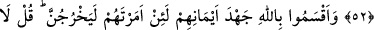
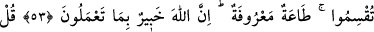
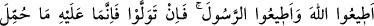
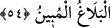

HZ. PEYGAMBER’İN SORUMLULUĞU
52. Her kim Allah’a ve Rasûlüne itâat eder, Allah’tan korkar ve O’ndan
sakınırsa, işte asıl bunlar mutluluğa erenlerdir.
53. (Münâfıklar), sen hakîkaten kendilerine emrettiğin takdirde mutlaka
(savaşa) çıkacaklarına dâir, en ağır yeminleri ile Allah’a yemin ettiler. De ki: Yemin
etmeyin. İtâatiniz mâlûmdur! Bilin ki Allah, yaptıklarınızdan haberdardır.
54. De ki: Allah’a itâat edin; Peygamber’e de itâat edin. Eğer yüz çevirirseniz
şunu bilin ki, Peygamber’in sorumluluğu kendisine yüklenen (tebliğ görevini
yapmak), sizin sorumluluğunuz da size yüklenen (görevleri yerine getirmeniz)dir.
Eğer ona itâat ederseniz, doğru yolu bulmuş olursunuz. Peygamber’e düşen, sadece
açık-seçik duyurmaktır.
“Her kim Allah’a ve Rasûlü’ne itâat eder”; yâni kim olursa olsun Allah ve
Rasûlü’nün zorunlu ve geçerli şer’î hükümlerine itâat eder, geçmiş günahları sebebiyle
cezâlandırılabileceği endişesiyle “Allah’tan korkar ve” ömrünün geri kalan kısmında
“O’ndan sakınırsa işte asıl bunlar” işte başkaları değil tâat, haşyet (saygı/korku) ve
ittikâ (takvâ/sakınma) vasıfları ile sıfatlanan bu kimseler “mutluluğa erenlerdir.” ebedî
nimetlere ulaşanlardır.
el-Müfredât’ta belirtildiği üzere “__WORD__, selâmetin husûlüyle beraber zafer elde
etmektir.
el-Keşşâf’ta şöyle nakledilir: “Bir hükümdar âlimlerden, kendisiyle amel edildiğinde
başka âyetlere ihtiyaç kalmayacak bir âyet söylemelerini istedi. Zamanın âlimleri, bu
âyet üzerinde ittifak ettiler.”
Nihâi maksada ermek istersen, işte yol
Mevlâ’nın rızâsını talep edersen, işte amel
Farzları edâ ve haramlardan kaçınma husûsunda Allah ve Rasûlü’ne itâat etmek
gerekir. Allah dâvet etmektedir. O halde Allah’ın dâvetine icâbet etmek gerekir. İbn Atâ